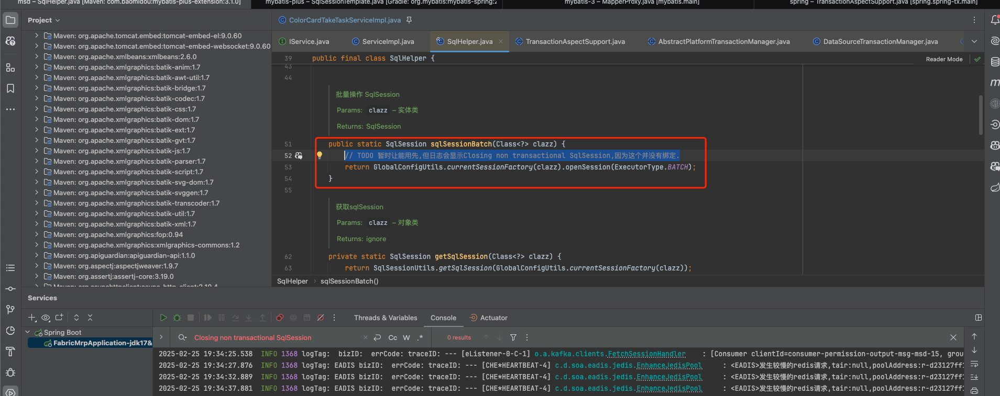

Mybatis Plus Cache Consistency
Mybatis Plus引发的一级缓存一致性问题
1.现象
发现问题版本：
- mybatis plus：3.1.0
- mybatis：3.5.0
在同一个事务中，通过mybatis plus执行批量操作更新数据（saveBatch、saveOrUpdateBatch、updateBatchById）后，执行查询的数据仍为更新之前的缓存数据。`
测试代码如下：
// 输出结果：
// 测试色卡编号结果1===================0000
// 测试色卡编号结果1===================123
// 测试色卡编号结果2===================0000
// 测试色卡编号结果2===================0000（查询结果与实际不一致）
public void test() {
((ColorCardTakeTaskServiceImpl) AopContext.currentProxy()).test1();
((ColorCardTakeTaskServiceImpl) AopContext.currentProxy()).test2();
}
@Transactional(rollbackFor = Throwable.class)
public void test1() {
ColorCardTakeTaskEntity takeTaskEntity = colorCardTakeTaskRepository.getById(1);
System.out.println("测试色卡编号结果1===================" + takeTaskEntity.getCardNo());
ColorCardTakeTaskEntity update = new ColorCardTakeTaskEntity();
update.setId(takeTaskEntity.getId());
update.setCardNo("123");
colorCardTakeTaskRepository.updateById(update);
takeTaskEntity = colorCardTakeTaskRepository.getById(1);
System.out.println("测试色卡编号结果1===================" + takeTaskEntity.getCardNo());
}
@Transactional(rollbackFor = Throwable.class)
public void test2() {
ColorCardTakeTaskEntity takeTaskEntity = colorCardTakeTaskRepository.getById(1);
System.out.println("测试色卡编号结果2===================" + takeTaskEntity.getCardNo());
ColorCardTakeTaskEntity update = new ColorCardTakeTaskEntity();
update.setId(takeTaskEntity.getId());
update.setCardNo("456");
colorCardTakeTaskRepository.updateBatchById(Lists.newArrayList(update));
takeTaskEntity = colorCardTakeTaskRepository.getById(1);
System.out.println("测试色卡编号结果2===================" + takeTaskEntity.getCardNo());
}
2.根因
批量操作使用了不同的SqlSession
- 通过断点观察到，同一个事务下，在批量操作中使用的mybatis执行器与mapper中的不一致（左边为批量更新updateBatchById操作,右边为getById操作）。断点代码位置DefaultSqlSession#update。 批量更新操作 getById操作
- mybatis中的一级缓存位于执行器BaseExecutor类中并且默认开启，执行器与SqlSession同级，为SqlSession的成员属性。执行器在执行更新、事务提交时会清空缓存并在查询时获取数据库最新数据（如下图）。执行器不同本质上SqlSession也不同，不同SqlSession之间不会共享一级缓存，因此导致了更新后查询数据不一致的情况。
mybatis一级缓存 清空一级缓存
根因
由于是因为在一个事务中使用了不同的SqlSession导致，因此追踪到创建SqlSession的代码，发现罪魁祸首如下图。在批量操作时（saveBatch、saveOrUpdateBatch、updateBatchById），开启了一个新的SqlSession，并且在方法中标注了TODO。

{kind=link}
{kind=link}
{kind=link}
{kind=link}
3.解决
升级Mybatis Plus版本到3.3.0以上可以解决这个问题：
虽然能取到当前SqlSession，但是由于原生Mybatis批量操作和简单操作中使用了不同的执行器，并且无法进行切换。因此Mybatis Plus中不得不通过开启新的SqlSession来达到切换执行器的目的，在3.3.0版本开始，虽然开启了新的SqlSession，但对当前事务中的SqlSession一级缓存进行了清空操作